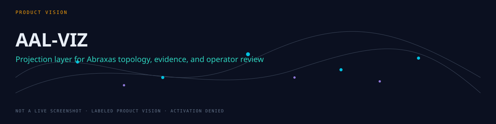

Hand-built SVG masters — foundation (0), runtime completeness (1), and engineering runes (2). One operator alphabet: outline, solid, engrave, and motion-segmented variants. Not a product screenshot. Activation remains denied.
Authority: visual identity only. Shape encodes status; color is secondary. Live charts and topology layouts stay procedural in the console.
